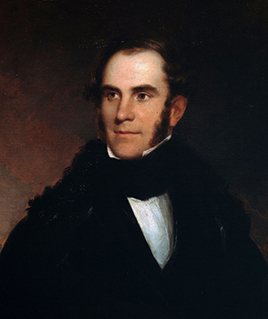
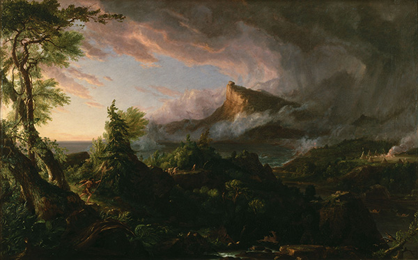
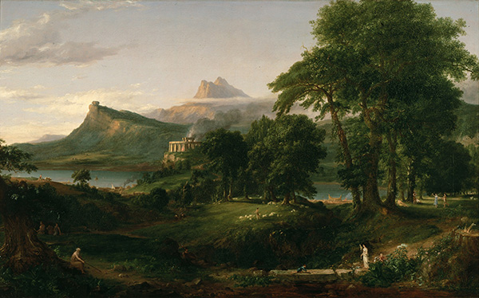
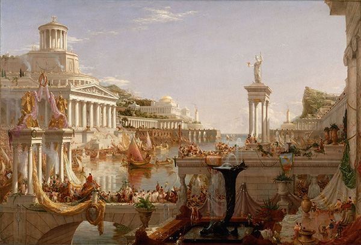
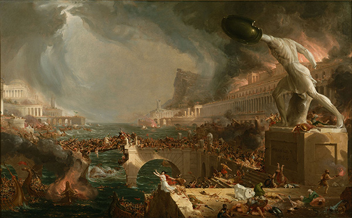
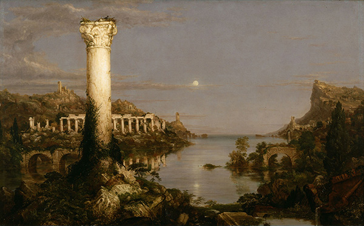

Article written by Diego Branciforte
Thomas Cole, born in 1801, was America’s leading landscape painter during the first half of the 19th century. His goal was to create a "higher style of landscape" that could express moral or religious meanings. After his first major efforts in this regard were met with mixed reviews, he traveled to Europe to learn and study the works of others. His work during the 1830s and 1840s went into the creation of complex imaginary works, often incorporating grandiose scenery with impressive lighting techniques. In 1848, Cole had an unfortunate premature death, though his influence on the course of American landscape painting was profound and his works influenced numerous younger painters who matured in the late 1840s and early 1850s.
"Violence and time have crumbled the works of man, and art is again resolving into elemental nature" - Thomas Cole, from the description of the final painting in this series
Cole often crafted beatiful narratives by creating multiple interconnected paintings in a series. One of his series, tiltled The Course of Empire depicts the growth and fall of an imginary city situated on a river valley near the sea. The distinct landmarks of the valley are identifiable in each of the paintings, perhaps to contrast the immutability of the earth with the transience of man.
| The Savage State |  |
|---|---|
| The Arcadian or Pastoral State |  |
| Consummation |  |
| Destruction |  |
| Desolation |  |
| Click here for a detailed explanation of each painting! | |
Email: supreme.art.enjoyer279@mailmail.com
Phone: 777-777-7777
{kind=link}
{kind=link}
{kind=link}
{kind=link}
{kind=link}